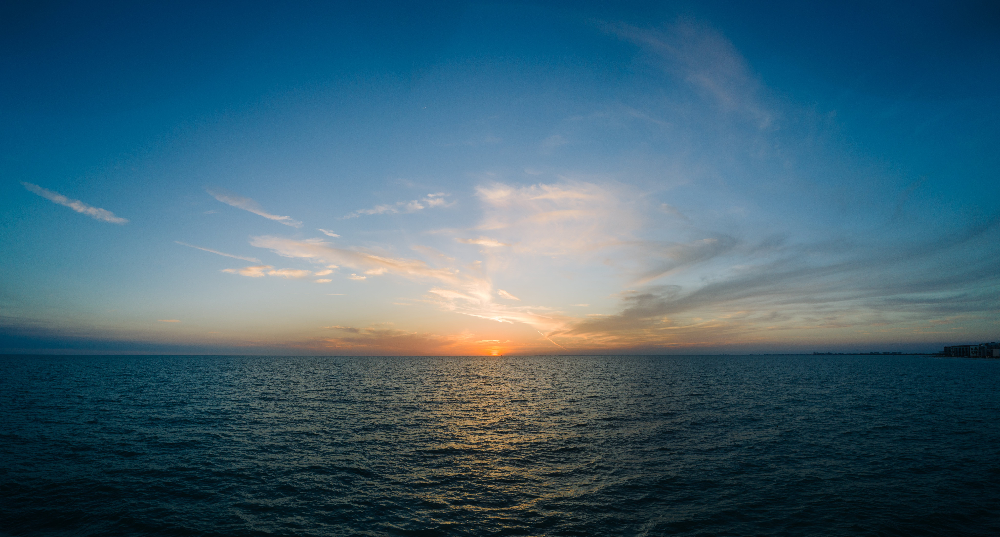

Speranza
In questa parte della presentazione sarà visto il viaggio migratorio da un punto di vista prettamente emotivo.
Dietro le storie, oltre il cinema
Il film “Io capitano” si ispira alle toccanti storie di Kouassi Pli Adama Mamadou e Fofana Amara, fornendo un fondamentale contesto umano alla trama.
Rischiare tutto per un sogno
Nel film i due protagonisti sono attratti da un sogno che li accomuna: raggiungere l’Europa e condurre una vita migliore e serena.
Il tema del viaggio
Tema fondamentale su cui il film ci induce a riflettere è proprio quello del viaggio, il quale rappresenta, per colui che abbandona la propria terra e le proprie origini, l’occasione per lasciarsi alle spalle il dolore e le sofferenze della guerra, per garantire una vita serena alla propria famiglia e ai propri figli, per redimersi e ripartire da zero, o semplicemente per cominciare una nuova vita, fatta di speranze, di sogni, di nuove opportunità.
La forza motrice della speranza
I migranti talvolta impiegano mesi, a volte anche un anno intero, per arrivare sani e salvi oltremare. L’unica cosa che li muove e gli dà la forza di andare avanti è la loro speranza.